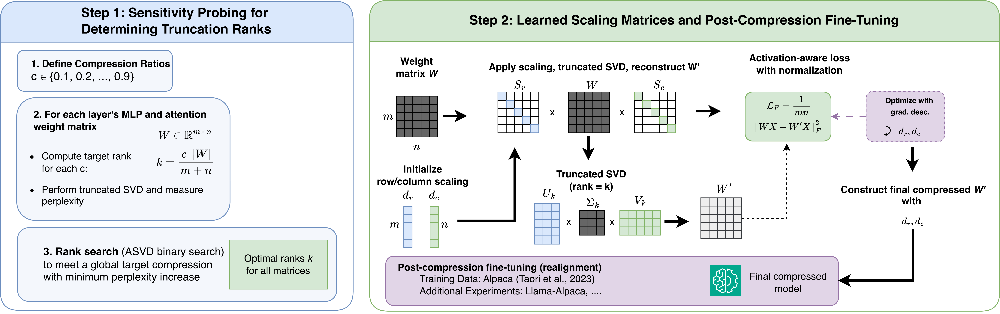

Why it matters왜 중요한가
Among compression families, low-rank is the hardware-friendly one — but plain SVD on weights is poor.
압축 기법 중 저랭크는 '하드웨어 친화적'인 선택지다 — 그런데 가중치에 그냥 SVD를 쓰면 성능이 나쁘다.
Quantization and pruning need specialized hardware support; low-rank decomposition does not, and it stacks on top of them. But naive SVD that minimizes ‖W−W′‖ does poorly on LLM weights because of activation outliers. Prior methods (ASVD, SVD-LLM) absorb outliers by deriving scaling matrices S analytically. SigmaScale asks: can we just learn S?
양자화·프루닝은 특수 하드웨어 지원이 필요하지만 저랭크 분해는 그렇지 않고, 그 위에 겹쳐 쓸 수 있다. 그러나 ‖W−W′‖만 줄이는 단순 SVD는 활성값 이상치 때문에 LLM 가중치에서 성능이 나쁘다. 기존 기법(ASVD, SVD-LLM)은 스케일링 행렬 S를 해석적으로 유도해 이상치를 흡수한다. SigmaScale은 묻는다: 그냥 S를 학습하면 안 될까?

By the numbers핵심 숫자
(first work to)스케일링 행렬을 학습
(최초)
compression regime약한 압축 구간에서
가장 강함
compression loss↓유효랭크 엔트로피↓ ↔
압축 손실↓ 상관
(SVD-LLM: 13.31)PPL, Llama-3.1-8B @0.90×
(SVD-LLM: 13.31)
benchmarksLLM 2개 / 제로샷
벤치마크 5개
(unlike quant/pruning)특수 하드웨어 불필요
(양자화·프루닝과 달리)
Results — best on zero-shot accuracy결과 — 제로샷 정확도에서 우위
| Method | PPL↓ | ARC-Easy | HellaSwag |
|---|---|---|---|
| Baseline (1.0×)Baseline (1.0×) | 7.21 | 79.63 | 80.12 |
| SVD-LLM | 13.31 | 68.10 | 64.71 |
| ASVD+ | 8.26 | 76.89 | 74.35 |
| SigmaScale | 8.95 | 78.62 | 75.98 |
The idea — two mechanisms아이디어 — 두 개의 메커니즘
Learned activation-aware scaling
Optimize row/column vectors → positive diagonal S = diag(exp(d)), applied as Sr W Sc before truncated SVD, under an activation-aware loss ‖WX − W′X‖.
행·열 벡터를 최적화해 양의 대각 S = diag(exp(d))를 만들고, 절단 SVD 전에 Sr W Sc로 적용 — 활성값 인식 손실 ‖WX − W′X‖ 아래.
Reshapes the singular spectrum
Learned scaling reduces the effective-rank entropy of Σ, and that drop tracks the compression-loss drop (r≈0.9) — evidence that learning S manipulates intrinsic rank.
학습된 스케일링은 Σ의 유효랭크 엔트로피를 낮추고, 그 감소가 압축 손실 감소와 연동(r≈0.9) — S 학습이 내재 랭크를 조작한다는 증거.
How it works어떻게 작동하나
- Sensitivity probing민감도 프로빙Per-module truncated SVD across ratios; binary-search ranks to hit a global compression target with minimal perplexity rise.모듈별 절단 SVD를 비율별로; 전역 압축 목표를 PPL 상승 최소로 맞추도록 랭크 이진탐색.
- Init scaling vectors스케일링 벡터 초기화d_r, d_c from a Gaussian scaled by σ_W; build S_r=diag(exp(d_r)), S_c=diag(exp(d_c)).d_r, d_c를 σ_W로 스케일한 가우시안으로; S_r=diag(exp(d_r)), S_c=diag(exp(d_c)) 구성.
- Scale → SVD → inverse스케일 → SVD → 역변환W′ = S_r⁻¹ · SVD_k(S_r W S_c) · S_c⁻¹; minimize the activation-aware loss ‖WX − W′X‖_F.W′ = S_r⁻¹ · SVD_k(S_r W S_c) · S_c⁻¹; 활성값 인식 손실 ‖WX − W′X‖_F 최소화.
- Absorb + recover흡수 + 회복Fold Σ into low-rank factors L, R, replace W; then post-compression fine-tune (SFT or KD) to realign.Σ를 저랭크 인자 L, R에 흡수해 W 교체; 이후 압축 후 미세조정(SFT/KD)으로 재정렬.
What to take away그래서, 가져갈 것
Hardware-friendly. Low-rank deploys without special hardware and stacks on top of quantization/pruning.
하드웨어 친화적. 저랭크는 특수 하드웨어 없이 배포되고 양자화·프루닝 위에 겹쳐 쓸 수 있다.
Learning beats deriving. First work to learn the scaling matrices — reshaping the singular spectrum instead of deriving S analytically.
유도보다 학습. 스케일링 행렬을 학습한 최초 연구 — S를 해석적으로 유도하는 대신 특이값 스펙트럼을 재편.
Mechanistic evidence. Effective-rank-entropy drop strongly tracks compression-loss drop (r≈0.9).
메커니즘 근거. 유효랭크 엔트로피 감소가 압축 손실 감소와 강하게 연동(r≈0.9).
Mind the regime. Shines at 0.90× but degrades sharply at 0.50× — a truncation-quality booster, not an extreme-compression solution.
구간을 보라. 0.90×에선 강하지만 0.50×에선 급락 — 절단 품질 향상기이지 극단 압축 해법은 아니다.